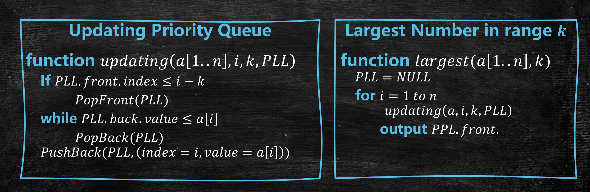
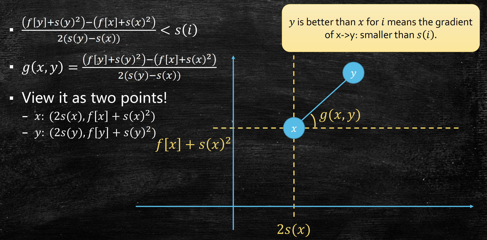
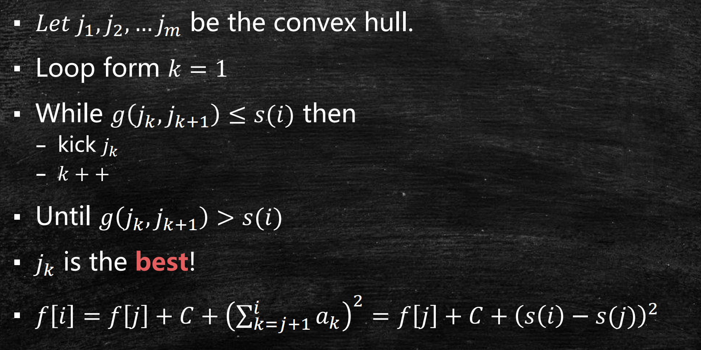
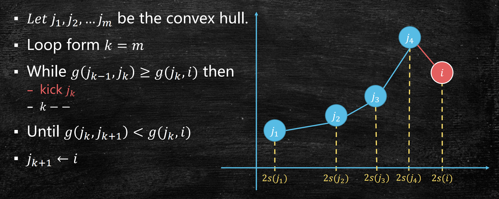
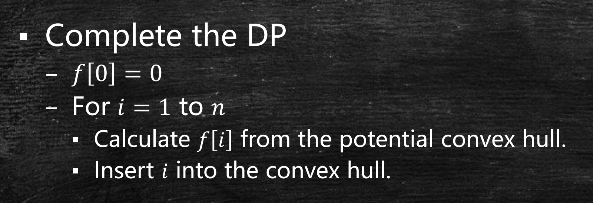

动态规划(2)：优先级队列优化
Last updated on May 5, 2025 pm
本文为SJTU-AI2615算法课程的知识点复习，主要复习内容为动态规划的优先级队列优化，包括连续 k 个数的最大值、最长递增子序列、最小制造成本等问题。
连续 k 个数中的最大值
问题描述
- 输入：数组 和 整数
- 输出：每个长度为 的连续子数组中的最大值
DP 基本思路

- 暴力解法：对每个窗口遍历 个元素找最大值，时间复杂度
- 堆优化：维护 构成的堆，每次删除左侧元素，插入右侧元素，时间复杂度
双端队列优化
- 关键思路：维护一个单调递减队列（Potential Largest List），保存潜在最大值
- 队列性质：队首元素是当前窗口最大值，队列中元素按索引递增且值递减
- 更新步骤：
- 移除过期元素：若队首元素索引超出窗口左边界，弹出队首
- 维护单调性：从队尾开始，移除所有值小于当前元素 的索引
- 插入当前元素：将当前元素索引加入队尾
- 记录结果: 当 时，队首元素即为窗口最大值

- 时间复杂度：（每个元素入队、出队各一次）
最长递增子序列
问题描述
- 输入：序列
- 输出：最长递增子序列长度（LIS）的长度，LIS 指 ，其中
优先级队列优化
-
核心思路：维护一个潜在前缀列表
sm，其中sm[len]表示长度为len的递增子序列的最小末尾值。由于该列表单调递增，查找过程可优化为二分搜索 -
算法步骤：
- 初始化
- 对每个 ：
- 二分查找使得 的最大
- 更新
- 输出更新过的最大
-
时间复杂度：
最小生产成本
问题描述
- 输入：生产成本 ，
- 要求：将区间 合并生产的成本为
- 输出：求最小总生产成本
DP 基本思路
- 子问题：
f[i]表示生产前i个物品的最小成本 - 状态转移：
凸包优化
- 为了维护潜在的分割点，我们需要知道计算 时，何时 比 更好
- 整理可得，
其中，

-
维护凸包：
- 用双端队列保存决策点对应的直线，保证相邻直线斜率单调递增
- 当新增直线时，删除队尾斜率不满足单调性的直线
-
二分查找最优决策点：
- 对每个 ，计算当前斜率
- 通过二分查找找到队列中斜率小于 相交的最优直线，得到最小
整体算法
- 更新 f[i]

- 更新凸包

- 整体算法

- 时间复杂度：
注：本文中所有图片均来自张宇昊老师的课程PPT。
动态规划(2)：优先级队列优化
https://cny123222.github.io/2025/04/10/动态规划-2-：优先级队列优化/